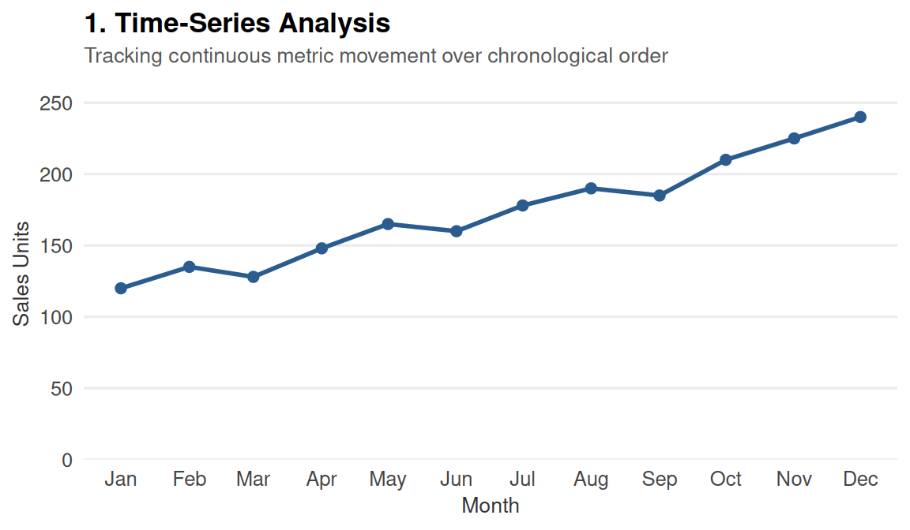
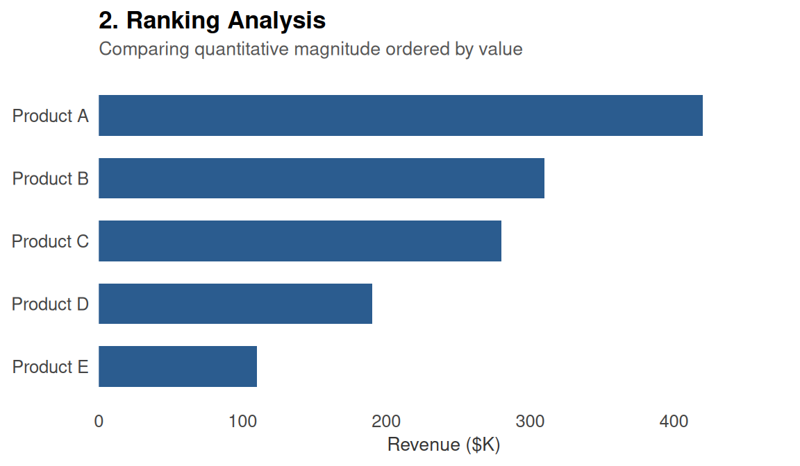
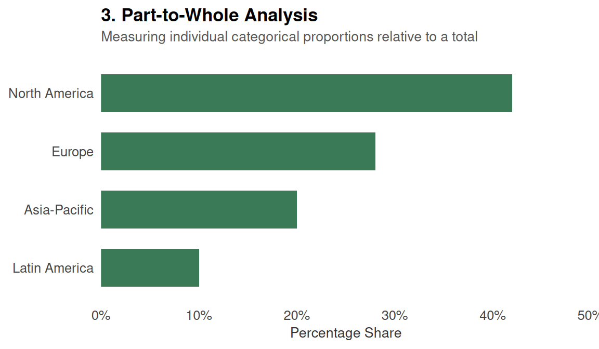
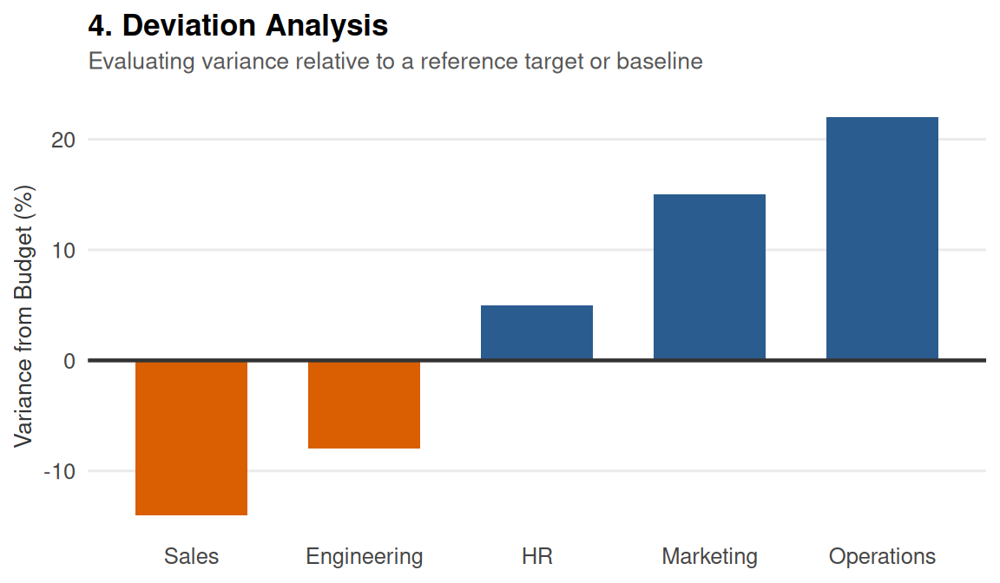
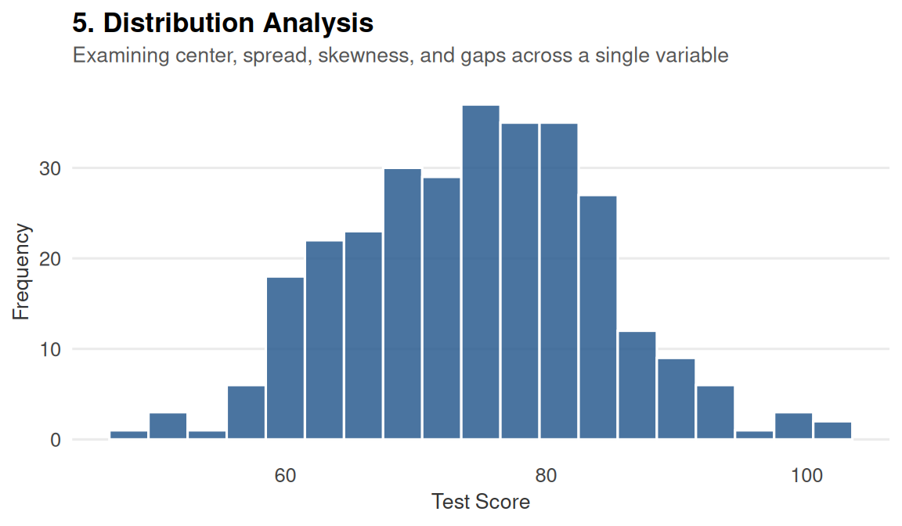
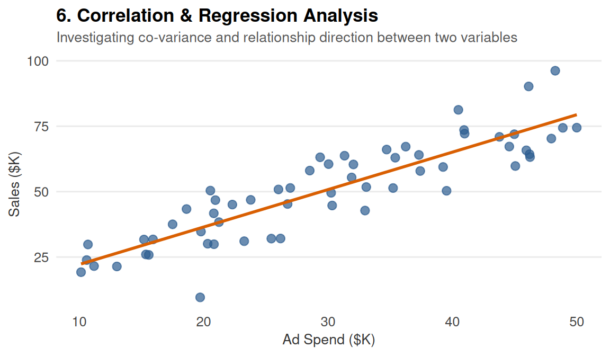
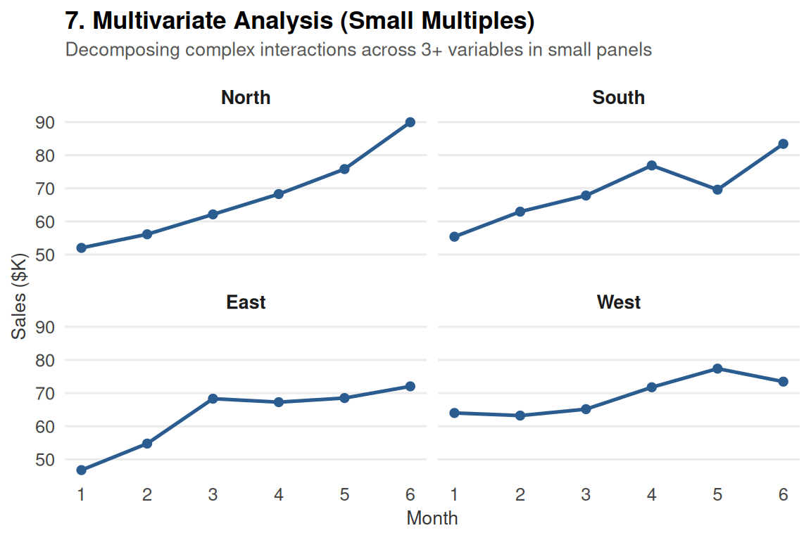
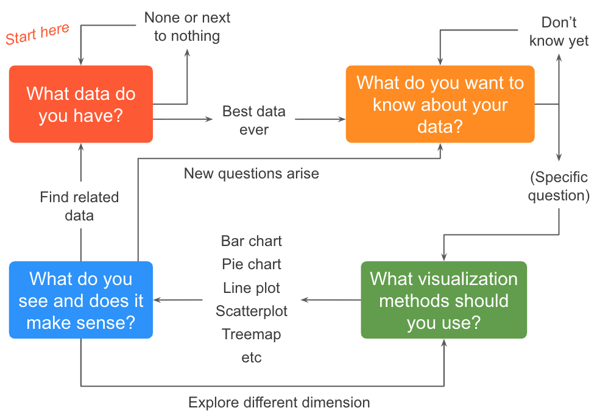

Data Visualization
Translating Data into Visual Insights
WarningThis page covers…
- The message to move from raw data to meaningful visual insights without relying on default templates.
- Stephen Few’s framework to select charts by Analytical Task.
- Nathan Yau’s 4-step graphing roadmap to map variables, iterate on designs, and spot anomalies.
It’s easy to treat data visualization like a finishing touch—a decorative step to make our numbers look pretty. But making graphics isn’t just cosmetic; it’s actually an integral tool to get to know our data. Plotting data allows us to explore, understand, and question what’s really going on in our data. A single average or correlation can easily hide the big picture, but a quick plot lets us look under the hood, verify our assumptions, and catch all the cool patterns and strange outliers that summary formulas miss.
“Visualization provides insight that cannot be appreciated by any other approach to learning from data.”
William S. Cleveland
Introduction
Data visualization is a vast, interdisciplinary field. It sits at the intersection of statistics, computer science, psychology, and graphic design. The truth is that we could easily spend an entire semester exploring advanced topics like color theory, interactive charts, design of dashboards, cartographic displays, or the cognitive neuroscience of visual perception.
Given the limited amount of time that we can dedicate to this topic, we have decided to look at the tip of the data visualization “iceberg”. Specifically, we will focus on a handful of useful tools and principles that will help you create better graphics.
The Right Chart for the Right Task
While frameworks like the Grammar of Graphics provide the structural tools to build a visualization piece-by-piece, they leave an open question: How do we know which chart we should actually build?
When you look at a raw dataset, it is easy to feel overwhelmed by the infinite ways you could map variables onto a canvas. To cut through the noise, you should start by shifting your focus away from the software code and toward your statistical objective. Ask yourself one fundamental question:
“What specific relationship or pattern am I trying to uncover or communicate?”
To help us answer this, data visualization expert Stephen Few organized visual inquiries into a framework called Analytical Tasks. Instead of picking a chart because it looks interesting, you choose a visual display based on the statistical story you need to tell.
Few’s 7 Core Analytical Tasks and Patterns
In his seminal book Now You See It: Simple Visualization Techniques for Quantitative Analysis, Stephen Few outlines seven core analytical tasks (also referred to as relationship types). Analysts use these foundational patterns to make sense of data, identify trends, and spot outliers.
Keep in mind that Few’s classification is not a comprehensive catalogue of every possible graphic. In fact, it does not include many specialized plots used by certain communities, or for specific purposes. Nevertheless, Few’s classification gives us a short list of common tasks to always keep in mind.
1. Time-Series Analysis
- Definition: Examining how data changes over a continuous variable, almost always time.
- Patterns to Look For: Trends (upward/downward), cycles (seasonal fluctuations), variability, rate of change, and sudden shifts.
- Best Display: Line charts.
2. Ranking Analysis
- Definition: Comparing quantitative values to determine their relative order (e.g., highest to lowest).
- Patterns to Look For: High performers, low performers, and sequential standing.
- Best Display: Bar charts (ordered by value magnitude).

3. Part-to-Whole Analysis
- Definition: Measuring the proportion or percentage that individual parts contribute to a single total.
- Patterns to Look For: Which parts dominate the whole and how minor components scale relative to one another.
- Best Display: Horizontal or vertical bar charts (Few strongly discourages pie charts due to low data density and poor visual processing).

4. Deviation & Comparisons Against a Benchmark
- Definition: Comparing a set of values against a reference point or baseline target.
- Patterns to Look For: Variances from a budget, a historical average, or a future target.
- Best Display: Bar charts or bullet graphs showing the variance line.

5. Distribution Analysis
- Definition: Looking at how a set of data points is spread across its entire range.
- Patterns to Look For: Central tendency (mean/median), spread, skewness, and gaps in data.
- Best Display: Histograms or strip plots.

6. Correlation & Regression Analysis
- Definition: Examining the relationship between two different quantitative variables to see if they move together.
- Patterns to Look For: Positive correlation, negative correlation, or a complete absence of a relationship.
- Best Display: Scatter plots.

7. Multivariate Analysis
- Definition: Analyzing three or more variables simultaneously to find complex, hidden patterns.
- Patterns to Look For: Co-dependencies and clusters among multiple data factors.
- Best Display: Trellis displays (small multiples) or heatmaps.

The Graphing Process
Now that we’ve looked at Stephen Few’s analytical patterns, let’s zoom out and look at the bigger picture. How do you actually sit down and create a chart from scratch?
This is where the Graphing Process proposed by data visualization expert Nathan Yau comes in. While every dataset and project will feel a little different, Yau suggests keeping four main questions in mind whenever you plot data:
- What data do you have?
- What do you want to know about your data?
- What visualization methods should you use?
- What do you see, and does it make sense?
These four questions can be nicely displayed in the following flowchart.

Instead of viewing Nathan Yau’s framework and Stephen Few’s patterns as two separate toolkits, it helps to weave them together. Few gives us the vocabulary for patterns, while Yau gives us the roadmap for exploration.
Step 1: What Data Do You Have?
Before picking colors or typing code, take a step back and audit your raw materials:
- How many variables do you have? Are you looking at one variable on its own, comparing two, or working with three or more?
- What types of variables are they?
- Quantitative (numbers, counts, continuous measurements)
- Qualitative (categories, groups, names)
- Time (dates, timestamps, years)
- Location (coordinates, zip codes, countries)
- Context Matters: Always keep three additional constraints in mind:
- What question(s) do you want to answer? (Your clear objective)
- Who is your audience? (Freshman students? Executives? The general public?)
- What media are you using? (A static PDF report, a phone app, or a large presentation slide?)
Step 2: What Do You Want to Know About Your Data?
This is where Stephen Few’s analytical patterns fit right into Nathan Yau’s process. Your goal isn’t just to “make a graph”—it’s to ask a specific visual question using your variables:
- Single Variable: You’re looking for Distributions or Deviations. How are values spread out? Are there clusters or gaps?
- Two Variables: You might ask about Relationships (is there a correlation between X and Y?) or Time Series (how does a metric change across dates?).
- Three or More Variables: You’re often looking at Multivariate comparisons, Geospatial patterns, or breaking down Part-to-Whole compositions across categories.
Step 3: What Visualization Methods Should You Use?
Once you know your variables (Yau) and the analytical task you want to explore (Few), your chart choice almost picks itself:
| Analytical Task / Purpose | Common Visual Solutions |
|---|---|
| Change over Time Tracking trends, cycles, or movements across a chronological scale. |
Line charts (timelines), area charts, slope graphs. |
| Comparisons Evaluating differences in magnitude between distinct categories. |
Bar charts, column charts, dot plots. |
| Ranking Ordering categorical items by a metric to highlight maximums and minimums. |
Sorted bar charts, lollipop charts. |
| Part-to-Whole Displaying how individual sub-components contribute to a collective total. |
Stacked bar charts, treemaps, donut charts. |
| Distributions Shifting focus to a single quantitative variable to examine its shape, center, spread, and outliers. |
Histograms, boxplots, density plots, violin plots. |
| Relationships & Correlations Investigating co-variance, direction, and strength between two or more continuous variables. |
Scatter plots, bubble charts, scatter plot matrices. |
| Geospatial Analyzing variables mapped directly onto physical, geographic boundaries. |
Choropleth maps, symbol maps. |
| Flow & Direction Tracing the movement, pathways, or volume of data between systems. |
Sankey diagrams, arrow charts. |
| Textual Patterns Summarizing the frequency or weight of unstructured text data. |
Word clouds. |
Step 4: What Do You See, and Does It Make Sense?
Making the plot is only half the job. Once the chart appears on your screen, you enter the inspection phase:
- Systematic Variation: Do you see steady increasing patterns or decreasing patterns?
- Atypical Points or Outliers: Are there extreme values hanging out far away from the rest of the data? (Did someone input height in inches instead of centimeters?)
- Noise vs. Signal: Is there genuine structure here, or are you just looking at random fluctuation?
If something looks off, go back to Step 1. Data visualization is rarely a straight line—it’s an iterative loop of plotting, questioning, and refining.
Summary
At the end of the day, making a data graphic isn’t about knowing every single menu option in a graphing package such as "ggplot2"—it’s about building a clear bridge between your data and your reader. Stephen Few gives us the analytical vocabulary to define what we are looking for; Nathan Yau gives us the workflow roadmap for how to explore it.
By combining Stephen Few’s target questions with Nathan Yau’s step-by-step process, you can stop guessing which chart to build or settling for whatever the software throws at you by default. As you start creating your own plots, remember that a good graph shouldn’t just dump numbers onto a page; it should point out what actually matters, and make complex ideas feel effortless to understand.
Analytical Tasks Drive Chart Choice: Never pick a graph based on software defaults or visual novelty. Start by identifying your statistical objective—using Few’s 7 analytical tasks—to let the underlying data relationship dictate the visual form.
Graphing is an Iterative Loop, Not a Linear Path: Visualization is a tool for thinking. Follow Yau’s four-step cycle (Data, Intent, Method, Inspection) and expect to iterate, refine, or restart as you uncover anomalies and signals.
Filter Noise from Signal: Look past default settings to highlight key patterns, explain anomalies, and design intentionally for your audience.